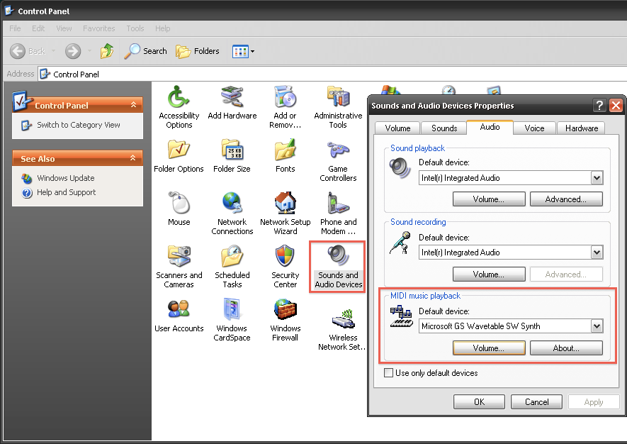
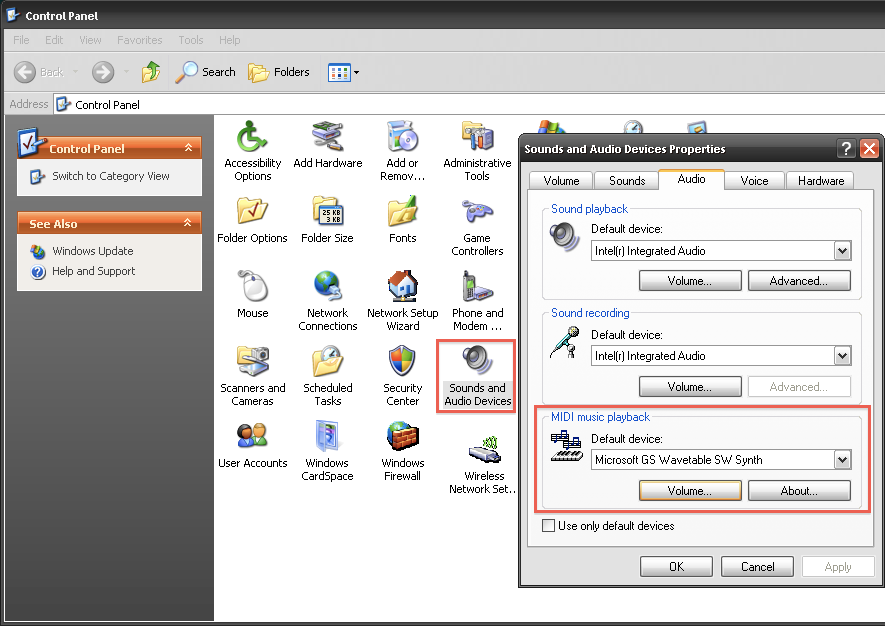

Enabling a synthesizer on Windows XP If you are on Windows XP and you get no sound output, open the Sounds and Audio Devices control panel and select the Audio tab.  Make sure a synthesizer is selected and that the volume is high enough.
Enabling a synthesizer on Windows XP
If you are on Windows XP and you get no sound output, open the Sounds and Audio Devices control panel and select the Audio tab.

Make sure a synthesizer is selected and that the volume is high enough.